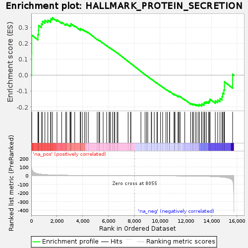
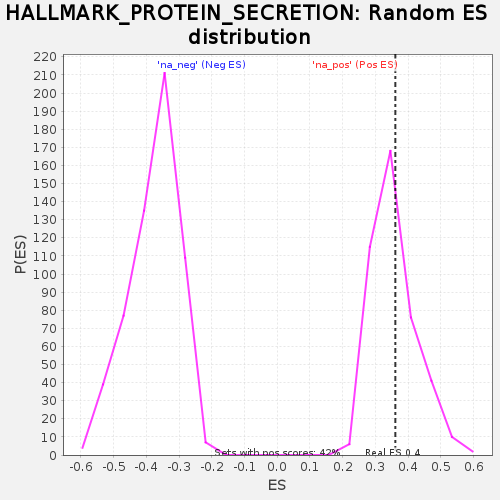

| | | Dataset | DiseaseStatus_ctr_vs_case |
| Phenotype | NoPhenotypeAvailable |
| Upregulated in class | na_pos |
| GeneSet | HALLMARK_PROTEIN_SECRETION |
| Enrichment Score (ES) | 0.36084542 |
| Normalized Enrichment Score (NES) | 1.0118651 |
| Nominal p-value | 0.41626793 |
| FDR q-value | 0.57527906 |
| FWER p-Value | 1.0 |
Table: GSEA Results Summary

Fig 1: Enrichment plot: HALLMARK_PROTEIN_SECRETION
Profile of the Running ES Score & Positions of GeneSet Members on the Rank Ordered List
| SYMBOL | RANK IN GENE LIST | RANK METRIC SCORE | RUNNING ES | CORE ENRICHMENT | | 1 | GLA | 24 | 92.180 | 0.1369 | Yes |
| 2 | SOD1 | 37 | 77.672 | 0.2527 | Yes |
| 3 | SSPN | 515 | 22.072 | 0.2554 | Yes |
| 4 | GBF1 | 565 | 20.473 | 0.2830 | Yes |
| 5 | CLTC | 574 | 20.241 | 0.3129 | Yes |
| 6 | ZW10 | 789 | 15.552 | 0.3226 | Yes |
| 7 | ANP32E | 877 | 14.420 | 0.3387 | Yes |
| 8 | AP1G1 | 1063 | 12.170 | 0.3452 | Yes |
| 9 | ADAM10 | 1291 | 10.079 | 0.3458 | Yes |
| 10 | VPS4B | 1502 | 8.678 | 0.3454 | Yes |
| 11 | RPS6KA3 | 1535 | 8.512 | 0.3562 | Yes |
| 12 | STAM | 1651 | 7.995 | 0.3608 | Yes |
| 13 | AP2M1 | 2002 | 6.535 | 0.3483 | No |
| 14 | SGMS1 | 2366 | 5.356 | 0.3332 | No |
| 15 | DST | 2672 | 4.648 | 0.3207 | No |
| 16 | DNM1L | 2755 | 4.425 | 0.3221 | No |
| 17 | COPB2 | 3009 | 3.897 | 0.3118 | No |
| 18 | TSPAN8 | 3061 | 3.789 | 0.3142 | No |
| 19 | DOPEY1 | 3084 | 3.734 | 0.3184 | No |
| 20 | CLCN3 | 3087 | 3.732 | 0.3239 | No |
| 21 | RAB14 | 3382 | 3.226 | 0.3100 | No |
| 22 | AP2S1 | 3818 | 2.607 | 0.2861 | No |
| 23 | ARFGEF1 | 3823 | 2.603 | 0.2898 | No |
| 24 | CLTA | 3839 | 2.580 | 0.2927 | No |
| 25 | ATP6V1H | 3970 | 2.415 | 0.2880 | No |
| 26 | SEC22B | 4153 | 2.214 | 0.2797 | No |
| 27 | ATP7A | 4273 | 2.088 | 0.2753 | No |
| 28 | ATP1A1 | 4438 | 1.908 | 0.2677 | No |
| 29 | NAPG | 5128 | 1.331 | 0.2257 | No |
| 30 | YKT6 | 5261 | 1.242 | 0.2191 | No |
| 31 | STX12 | 5318 | 1.203 | 0.2174 | No |
| 32 | ICA1 | 5592 | 1.006 | 0.2014 | No |
| 33 | COG2 | 5864 | 0.842 | 0.1854 | No |
| 34 | CLN5 | 6048 | 0.755 | 0.1749 | No |
| 35 | PAM | 6128 | 0.710 | 0.1709 | No |
| 36 | SEC24D | 6133 | 0.709 | 0.1717 | No |
| 37 | MAPK1 | 6305 | 0.627 | 0.1617 | No |
| 38 | SNX2 | 6438 | 0.557 | 0.1541 | No |
| 39 | AP3B1 | 6497 | 0.532 | 0.1512 | No |
| 40 | GOSR2 | 6673 | 0.455 | 0.1407 | No |
| 41 | TOM1L1 | 6742 | 0.431 | 0.1370 | No |
| 42 | SEC31A | 7532 | 0.156 | 0.0869 | No |
| 43 | STX16 | 7721 | 0.093 | 0.0750 | No |
| 44 | SNAP23 | 7750 | 0.080 | 0.0734 | No |
| 45 | USO1 | 8526 | -0.171 | 0.0242 | No |
| 46 | RER1 | 8850 | -0.288 | 0.0040 | No |
| 47 | VPS45 | 8968 | -0.342 | -0.0030 | No |
| 48 | COPB1 | 9060 | -0.376 | -0.0082 | No |
| 49 | RAB2A | 9334 | -0.496 | -0.0249 | No |
| 50 | NAPA | 9360 | -0.505 | -0.0257 | No |
| 51 | IGF2R | 9567 | -0.597 | -0.0380 | No |
| 52 | ARF1 | 9776 | -0.704 | -0.0502 | No |
| 53 | BET1 | 9805 | -0.719 | -0.0509 | No |
| 54 | TSG101 | 10050 | -0.852 | -0.0652 | No |
| 55 | ARFIP1 | 10215 | -0.954 | -0.0743 | No |
| 56 | TMX1 | 10472 | -1.133 | -0.0889 | No |
| 57 | KIF1B | 10583 | -1.198 | -0.0941 | No |
| 58 | MON2 | 10750 | -1.315 | -0.1027 | No |
| 59 | ERGIC3 | 10755 | -1.317 | -0.1010 | No |
| 60 | AP2B1 | 11109 | -1.636 | -0.1211 | No |
| 61 | COPE | 11112 | -1.640 | -0.1188 | No |
| 62 | SCAMP3 | 11181 | -1.714 | -0.1205 | No |
| 63 | GOLGA4 | 11415 | -1.920 | -0.1325 | No |
| 64 | LAMP2 | 11428 | -1.933 | -0.1304 | No |
| 65 | RAB5A | 11500 | -2.006 | -0.1319 | No |
| 66 | ARCN1 | 11581 | -2.091 | -0.1339 | No |
| 67 | OCRL | 11937 | -2.498 | -0.1528 | No |
| 68 | ARFGEF2 | 12395 | -3.247 | -0.1771 | No |
| 69 | RAB22A | 12544 | -3.536 | -0.1812 | No |
| 70 | SH3GL2 | 12607 | -3.672 | -0.1797 | No |
| 71 | LMAN1 | 12759 | -3.976 | -0.1833 | No |
| 72 | VAMP4 | 12881 | -4.261 | -0.1847 | No |
| 73 | TMED2 | 13033 | -4.619 | -0.1874 | No |
| 74 | ABCA1 | 13061 | -4.705 | -0.1820 | No |
| 75 | CAV2 | 13254 | -5.188 | -0.1865 | No |
| 76 | RAB9A | 13267 | -5.234 | -0.1794 | No |
| 77 | SCRN1 | 13428 | -5.732 | -0.1810 | No |
| 78 | STX7 | 13433 | -5.737 | -0.1727 | No |
| 79 | GNAS | 13508 | -5.987 | -0.1684 | No |
| 80 | GALC | 13630 | -6.453 | -0.1664 | No |
| 81 | VAMP7 | 13787 | -7.140 | -0.1657 | No |
| 82 | M6PR | 13855 | -7.500 | -0.1587 | No |
| 83 | CTSC | 13904 | -7.764 | -0.1501 | No |
| 84 | TMED10 | 14311 | -10.169 | -0.1607 | No |
| 85 | PPT1 | 14496 | -11.537 | -0.1551 | No |
| 86 | SCAMP1 | 14674 | -13.340 | -0.1464 | No |
| 87 | ARFGAP3 | 14832 | -15.313 | -0.1334 | No |
| 88 | AP3S1 | 14881 | -15.913 | -0.1126 | No |
| 89 | VAMP3 | 14977 | -17.489 | -0.0924 | No |
| 90 | TPD52 | 15018 | -18.037 | -0.0679 | No |
| 91 | YIPF6 | 15019 | -18.061 | -0.0408 | No |
| 92 | CD63 | 15655 | -58.446 | 0.0064 | No |
Table: GSEA details [plain text format]

Fig 2: HALLMARK_PROTEIN_SECRETION: Random ES distribution
Gene set null distribution of ES for HALLMARK_PROTEIN_SECRETION